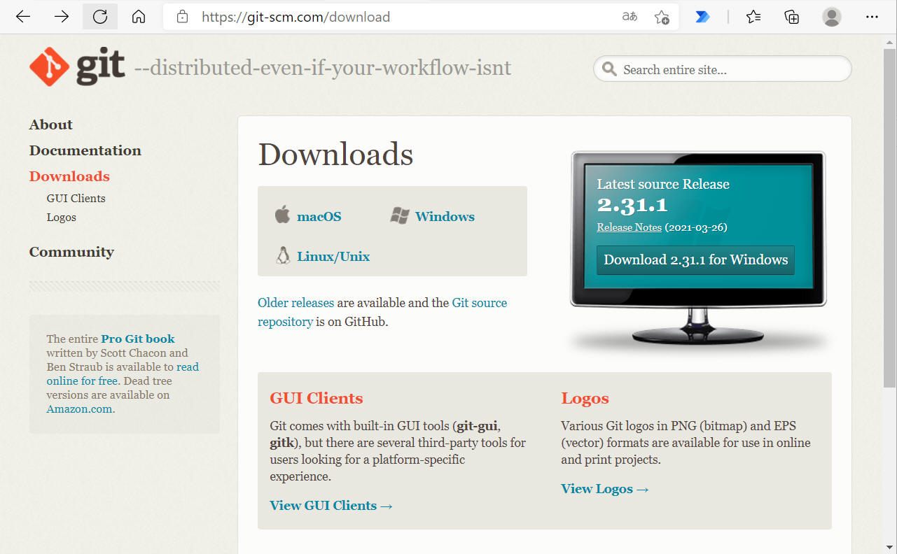
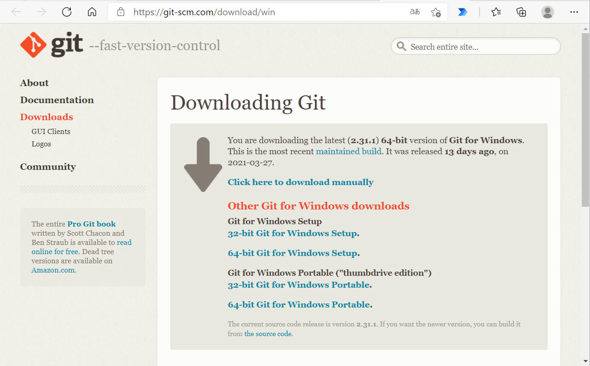
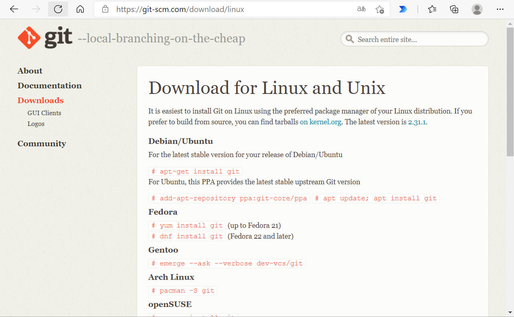

git に関する情報を記載します。
Git のダウンロードページ “https://git-scm.com/downloads” を開きます。

”Windows” または ”Download x.xx for Windows” をクリックすると下記画面になります。

この画面に遷移すると最新版の ”Git for Windows Setup” を自動的にダウンロード開始します。または必要とする downloads を選んでダウンロードを実施します。
ダウンロード完了後は、ダウンロードしたファイルを実行して指示に従ってインストールを行います。特に難しいところはありませんでした。
Git のダウンロードページ “https://git-scm.com/downloads” を開きます。
”Linux/Unix” をクリックすると下記画面になります。 使用している環境と一致するOSを探し、その指示に従ってインストールを行います。
注意
下記コマンドをそのまま入力してもインストールに失敗する場合が多いようです。例えば Debian/Ubuntu の場合、下記のようにコマンドを入力する必要がありました。
sudo apt-get install git
ご注意ください。

プロキシ設定を必要とする環境では、http, https ２つのプロトコルに対してプロキシ設定を行う必要があります。
以下に設定を行うコマンド入力例を示します。”コマンドプロンプト” や ”Terminal” などのコンソールにより設定を行ってください。
［実施例］
$ git config --global http.proxy http://proxy.mei.co.jp:8080
$ git config --global https.proxy https://proxy.mei.co.jp:8080
このコマンド入力により、”~/.gitconfig” ファイルに下記情報が記載されます。
[http]
proxy = http://proxy.mei.co.jp:8080
[https]
proxy = https://proxy.mei.co.jp:8080
補足：
上記は本書記載時点における 特定プロキシー環境で使用する場合の設定例です。
プロキシのアドレスおよびポート番号は使用環境に合わせて変更してください。
Git を使用する際は、ユーザ名、メールアドレスの情報を必要とします。以下に設定を行うコマンド入力例を示します。”コマンドプロンプト” や ”Terminal” などのコンソールにより設定を行ってください。
［実施例］
$ git config --global user.name "Ipro Taro"
$ git config --global user.email "ipro.taro@jp.panasonic.com"
特定リポジトリのみ別の設定としたい場合は、そのリポジトリ配下にいる状態で ”--global” を “--local“ へ置き換えて上記コマンドを実施することで実施できます。
$ git config --local user.name "Ipro Taro"
$ git config --local user.email "ipro.taro@jp.panasonic.com"
git を最新バージョンへアップグレードする方法について記載します。
Windows 環境については下記コマンドで最新版へアップデートできました。
$ git update-git-for-windows
古すぎる Git 使用の場合はこのコマンドが無い場合もあります。その場合は最新の Git を入手してインストールしてください。
Linux／Unix については Git (git-scm.com) をご確認ください。
Ubuntu で git インストール済みの場合、下記手順で最新版へアップデートできました。
sudo add-apt-repository ppa:git-core/ppa
sudo apt update
sudo apt upgrade
上記は一回のみ行えばよく、次回からは下記コマンドでアップグレードできます。
sudo apt update
sudo apt upgrade
概要： リポジトリの作成
概要： 現在のリポジトリ状況を確認
概要： 追加・編集などで変化があったファイルをステージングする
概要： ステージングしたファイル・ディレクトリをコミット
概要： Remote Repository (origin main) に Local Repository を反映
概要： WorkTree ファイルを全て add でステージング
概要： コメントを付けて commit 実行
概要： add & コメント付きで commit 実行
概要： 複数行コメントでコミット（１）
(例)
$ git commit -F- <<EOM >要約 > > 詳細 > > EOM
概要： 複数行コメントでコミット（２）
概要： 直前のコミットを編集
git push origin main
概要： リモートリポジトリにローカルリポジトリを反映
git push -f origin main
概要： リモートリポジトリにローカルリポジトリを強制反映
git fetch
概要： リモートリポジトリをダウンロード。
git pull
概要： リモートリポジトリをローカルへ反映
git pull origin <remote branch name>
概要： 指定のリモートブランチをローカルへ反映
git branch <branch name>
概要： ブランチ作成
git branch -m <old branch name> <new branch name>
概要： ブランチ名を変更
git checkout <branch name>
概要： 作業ブランチ（HEAD）変更
git checkout -b <branch name>
概要： ブランチ作成 ＆ 作業ブランチ（HEAD）変更
git merge <branch name>
概要： 現在のブランチへ <branch name> の内容をマージ
git stash
概要： 変更退避
git mv <old filename> <new filename>
概要： ファイル名を変更する、ファイルを移動する
git rm <ファイル名>
概要： git で管理しているファイルを削除し、ワークツリーからも削除する
git branch
git branch -a
git status
git add --dry-run .
git ls-files
git diff --name-only
git diff --staged
git log -2
git log -2 --stat
git log -2 --patch
git log -p <ファイルパス / ファイル名>
git stash list
git clean -nd
概要： Untracked ファイルの確認
git show
git branch -r
概要： リモートブランチ確認
git remote
概要： リモートリポジトリ表示
git remote -v
git remove rm origin
概要： リモートリポジトリ削除
git help
概要： ヘルプページ表示
git help -a
概要： git 全コマンドリスト
git tag
概要： tag 一覧表示
git reflog
概要： 過去の HEAD コミット一覧表示
git config --list
概要： リポジトリ設定内容表示
git config user.email
概要：
git config user.name
概要：
git --version
概要： git インストールバージョン確認
git rm --cached <ファイル名>
概要： git で管理しているファイルを削除し、ワークツリーからは削除しない
git branch --delete <ブランチ名>
git reflog
概要： 削除したブランチの最後のコミットを見つけて
git branch <ブランチ名> HEAD@{ログ番号}
ブランチを復活。
(1) 直前のコミットを取り消したい（コミットのみ取り消し）
$ git reset --soft HEAD^
(2) 直前のコミットを取り消したい（マルっと消したい）
$ git reset --hard HEAD^
(3) コミット後の変更を全部消したい
$ git reset --hard HEAD
(4) addを取り消したい
$ git reset --mixed HEAD
git revert
概要： コミットを打ち消して記録残す
git clean -fd
概要： Untracked ファイルの削除
git merge --abort
概要： 直前マージの取り消し
git reflog
概要： 復活する可能性のある呪文
git push --delete origin <リモートブランチ名>
概要： リモート上のブランチを削除
こちら へ移動
GitHub などで二段階認証を有効化すると、毎回ユーザー名・パスワードの入力を求められてやってられません。
credential.helper
を設定することでこれら設定を端末へ保存することができます。
[Windows]
$ git config --global credential.helper wincred
・・・と思いきや、"wincred" は既にサポート外。
現在は "microsoft/Git-Credential-Manager-for-Windows"
をインストールする必要があるみたいです。
以下の設定が正解。
$ git config --global credential.helper manager
これをインストールすると自動で(？) credential.helper=manager に切り替わるみたいです。
~/.gitconfig を見てみると
[credential]
helper = manager
となっていました。
これでエラーも出ず、パスワード入力も求められず扱えるようになりました。
Linux ではこんな感じでパスワードをキャッシュすることができるみたいです。
$ git config --global credential.helper 'cache --timeout=3600'
# Set the cache to timeout after 1 hour (setting is in seconds)
どういう仕組みで保存されてるのかを調べてみると Windows の場合は Windows の資格情報マネージャを使ってるようです。
https://git-scm.com/book/en/v2/Git-Tools-Credential-Storage
https://github.com/Microsoft/Git-Credential-Manager-for-Windows
エクスプローラで
"コントロール パネル\すべてのコントロール パネル項目\資格情報マネージャー"
のパスを指定すれば表示できます。
ここの「汎用資格情報」のところに "git:https://github.com" や "git:https://gitlab.com"
などの名前で保存されています。
消したいならここで削除すればいいです。
こんな感じでやります。
私の場合は、"Azure DevOps" から "Bitbucket"
へ引っ越しする際にこれでやってうまくお引越しできました。
$ git clone --mirror <SOURCE_REPOSITORY_URL>
$ cd <REPOSITORY>
$ git push --mirror <DESTINATION_REPOSITORY_URL>
移行する対象のリポジトリのURLのこと。
末尾が .git で終わるURL。
最初のコマンドgit clone ～を実行したときに ～.git フォルダができると思う。
そのフォルダのこと。
移行する先のリポジトリのURL。
末尾が .git で終わるURL。
Git LFS を使用すると、大容量ファイルはコードに対し並列ストレージに格納され、軽量な参照が Git リポジトリに格納されます。これは、リポジトリをより小さく高速にするため、オーディオファイルやビデオファイルなどの大きなメディアで作業するチームにとって便利です。
本ページの情報は、特記無い限り下記 MIT ライセンスで提供されます。
|
The MIT License (MIT) Copyright © 2022 Kinoshita Hidetoshi Permission is hereby granted, free of charge, to any person obtaining a copy of this software and associated documentation files (the "Software"), to deal in the Software without restriction, including without limitation the rights to use, copy, modify, merge, publish, distribute, sublicense, and/or sell copies of the Software, and to permit persons to whom the Software is furnished to do so, subject to the following conditions: The above copyright notice and this permission notice shall be included in all copies or substantial portions of the Software. THE SOFTWARE IS PROVIDED "AS IS", WITHOUT WARRANTY OF ANY KIND, EXPRESS OR IMPLIED, INCLUDING BUT NOT LIMITED TO THE WARRANTIES OF MERCHANTABILITY, FITNESS FOR A PARTICULAR PURPOSE AND NONINFRINGEMENT. IN NO EVENT SHALL THE AUTHORS OR COPYRIGHT HOLDERS BE LIABLE FOR ANY CLAIM, DAMAGES OR OTHER LIABILITY, WHETHER IN AN ACTION OF CONTRACT, TORT OR OTHERWISE, ARISING FROM, OUT OF OR IN CONNECTION WITH THE SOFTWARE OR THE USE OR OTHER DEALINGS IN THE SOFTWARE. |
| 2023-07-12 | - | "1-3. git アップグレード（バージョンアップ）" を追加 |
| 2021-04-04 | - | "2-5. 'git submodule'"を追加 |
| - | "6. Git Large File System (Git LFS)"を追加 | |
| 2021-02-10 | - | "5. Gitリポジトリを別のGitサーバへ移行"を追加 |
| 2021-02-03 | - | "4. Windows の認証情報保存場所"を追加 |
| 2021-01-13 | - | 新規作成 |